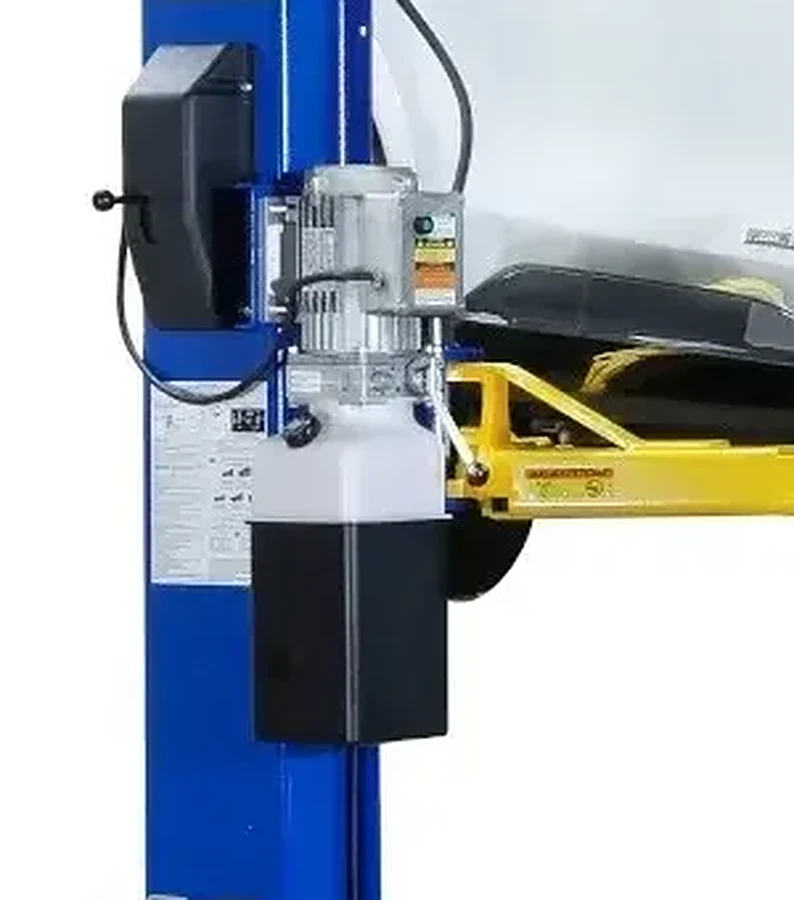
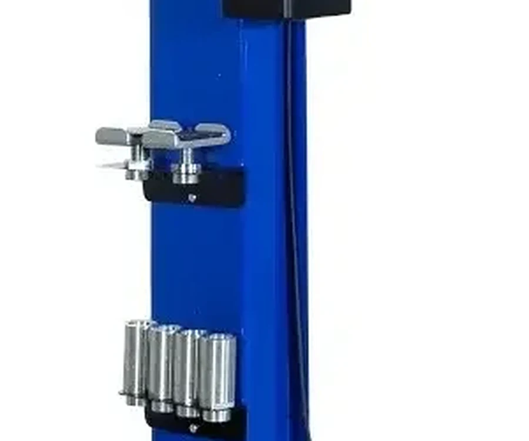

MADE IN USA
MADE IN USA


Elevador de 2 columnas Rotary SPOA10, 4535 kg
Asimétrico, sin travesaño en el piso, con brazos TRIO™ de tres etapas.
- Capacidad
- 4535 kg
- Elevación
- 1962 mm
- Techo necesario
- 3655 mm
- Ancho total
- 3469 mm
- Alimentación
- 208/230 V mono
- Tiempo de subida
- 45 s
- Fabricación
- Estados Unidos
- Certificación ALI
- SPOA10X
Precio a cotizar. Consultá planes de financiación. Instalación no incluida.
El SPOA10 es un elevador de 2 columnas asimétrico para autos y utilitarios de hasta 4535 kg. Las columnas giradas permiten abrir más las puertas con el vehículo arriba, y el piso queda libre para mover carros y herramientas.
¿Entra en tu taller?
Compará tus medidas con las del equipo.

Cargá las medidas libres de tu taller, en milímetros
- Techo necesario: 3655 mm
- Ancho total del equipo (C): 3469 mm
Es una primera comprobación. No reemplaza el relevamiento: el piso, la alimentación eléctrica y el espacio de circulación se revisan antes de instalar.
Mandar mis medidas a un técnicoEspecificaciones
Las letras corresponden a los planos.
| Capacidad | 4535 kg (10.000 lb) | |
| A | Elevación | 1962 mm |
| B | Altura total de la columna (estándar) | 3556 mm |
| C | Ancho total | 3469 mm |
| D | Espacio libre para el vehículo | 2413 mm |
| E | Altura del travesaño superior | 3455 mm |
| F–G | Brazo delantero (mín. / máx.) | 604 / 1036 mm |
| H–I | Brazo trasero (mín. / máx.) | 1016 / 1548 mm |
| J | Altura mínima del adaptador | 121 mm |
| K–L | Adaptador bajo / alto | 178 / 260 mm |
| M | Interior de la columna | 2699 mm |
| N | Altura del cilindro (elevación total) | 3632 mm |
| Altura de techo necesaria | 3655 mm | |
| Motor | 2 CV | |
| Alimentación | 208/230 V monofásico | |
| Tiempo de elevación | 45 s | |
| Carga máxima por brazo | 1134 kg |
Brazos TRIO™ y adaptadores
Se incluye un modelo de adaptador. El resto se vende por separado.


Comparalo antes de decidir
Otros elevadores de 2 columnas del catálogo.
| Modelo | Capacidad (escala 0 a 8.000 kg) | Elevación | Origen | ALI | Precio, IVA incl. |
|---|---|---|---|---|---|
 Unite PL 4.0 2ATrivium Pro Unite PL 4.0 2ATrivium Pro |
4.000 kg | 1850 mm | Marcado CE | — | $ 4.627.188 |
 Direct Lift DL9 by Rotary LiftDirect Lift Direct Lift DL9 by Rotary LiftDirect Lift |
4.082 kg | 1930 mm | EE. UU. | — | A cotizar |
| Rotary Lift SPOA10Rotary Lift |
4.535 kg | 1962 mm | EE. UU. | Certificado | A cotizar |
 Challenger Lifts VLE10Challenger Lifts Challenger Lifts VLE10Challenger Lifts |
4.536 kg | 1899 mm | — | Certificado | A cotizar |
 Trivium Pro U-T50MSDTrivium Pro Trivium Pro U-T50MSDTrivium Pro |
5.000 kg | 1910 mm | Marcado CE | — | $ 11.556.401 |
Preguntas frecuentes
¿Qué altura de techo necesita el SPOA10?
3655 mm. La columna estándar mide 3556 mm y el travesaño superior queda a 3455 mm.
¿Funciona con corriente monofásica?
Sí. La ficha indica motor de 2 CV con alimentación monofásica de 208/230 V.
¿La instalación está incluida?
No. Contamos con técnicos para instalarlo en todo el país y la instalación se cotiza aparte.